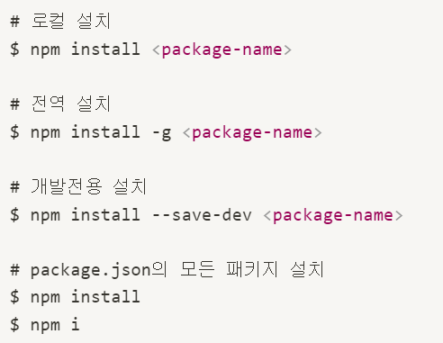

패키지 설치
Node.js에서 사용할 수 있는 모듈인 패키지를 설치할 때에는 npm install 명령어 뒤에 설치할 패키지 이름을 지정한다.
지역설치 / 전역 설치
npm install 명령어에는 지역(local) 설치와 전역(lobal) 설치 옵션이 있다.
옵션을 별도로 지정하지 않으면 지역으로 설치되며, 프로젝트 루트 디렉토리에 node_modules 디렉토리가 자동 생성되고
그 안에 패키지가 설치된다. 지역으로 설치된 패키지는 해당 프로젝트 내에서만 사용할 수 있다.
전역에 패키지를 설치하려면 npm install 명령어에 -g옵션을 지정한다.
모든 프로젝트가 공통 사용하는 패키지는 지역으로 설치하지 않고 전역에 설치한다.
전역에 설치된 패키지는 OS에 따라 설치 장소가 다르다.
ⓘ macOS의 경우 /usr/local/lib/node_modules
ⓘ 윈동의 경우 c\Users\%USERNAME%\AppData\Roaming\npm\node_modules
전역으로 모듈을 설치하게 된다면, 설치한 모듈명을 명령어로 사용할 수 있게 된다.
다만 전역으로 설치시 package.json에 기록이 안된다는 단점이 있어 협업에서 마이너스로 작용한다.
따라서 -D옵션을 통해 devdependencies에 깔고, npx 명령어를 통해 글로벌하게 실행하는 방식을 많이 사용한다.
package.json과 의존성 관리
Node.js 프로젝트에서는 많은 패키지를 사용하게 되고 패키지의 버전도 빈번하게 업데이트되므로 프로젝트가 의존하고 있는 패키지를 일괄 관리할 필요가 있다.
npm은 package.json 파일을 통해서 프로젝트 정보와 패키지의 의존성(dependency)을 관리한다.
이미 작성된 package.json이 있다면 팀 내에 배포하여 동일한 개발 환경을 빠르게 구축할 수 있는 장점이 있다.
💡 [ Tip ]
package.json은 Java의 maven에서 pom.xml과 비슷한 역할을 한다.
package.json을 생성하려면 프로젝트 루트에서 npm init 명령어를 실행한다.
일단 기본 설정값으로 생성된 package.json 파일을 수정하는 방법이 더 편리할 수 있으므로 npm init 명령어에 --yes 또는 -y 옵션을 추가한다.
그러면 기본 설정값으로 package.json 파일을 생성한다.
| Key | Value |
|---|---|
| name | 프로젝트 이름으로, 가장 중요합니다. 중앙 저장소에 배포할 때 version과 함께 필수 항목입니다. url로 사용되고, 설치할 때 디렉토리 이름이 되기 때문에 url이나 디렉터리에서 쓸 수 없는 이름을 사용하면 안 됩니다. 또한, 이름에 node나 js가 들어가면 안 됩니다. name은 214자보다 짧아야 하며, 점(.)이나 밑줄(_)로 시작할 수 없습니다. 대문자를 포함해서는 안 되며, require() 함수의 인수로 사용되며 짧고 알기 쉬운 것으로 짓는 것이 좋습니다. |
| version | 프로젝트 버전을 정의합니다. 3단계 버전을 사용하며, - 로 태그 이름을 적을 수 있습니다. |
| description | 프로젝트 설명으로, 문자열로 기술합니다. npm search로 검색된 리스트에 표시되기 때문에 사람들이 패키지를 찾아내고 이해하는 데 도움이 됩니다. |
| keywords | 프로젝트를 검색할 때 참조되는 키워드입니다. description과 마찬가지로 npm search로 검색된 리스트에 표시됩니다. |
| homepage | 프로젝트 홈페이지 주소입니다. url 항목과는 다르며, url을 설정하면 예상치 못한 움직임을 하게 되므로 주의합니다. |
| author | 프로젝트 작성자 정보로, 한 사람만을 지정합니다. JSON 형식으로 name, email, url 옵션을 포함합니다. |
| contributors | 프로젝트에 참여한 공헌자 정보로, 여러 사람을 배열로 지정할 수 있습니다. |
| repository | 프로젝트의 소스 코드를 저장한 저장소의 정보입니다. 소스 코드에 참여하고자 하는 사람들에게 도움이 될 수 있습니다. 프로젝트의 홈페이지 url을 명시해서는 안 됩니다. |
| scripts | 프로젝트에서 자주 실행해야 하는 명령어를 scripts로 작성해두면 npm 명령어로 실행 가능합니다. |
| config | 소스 코드에서 config 필드에 있는 값을 환경 변수처럼 사용할 수 있습니다. |
| private | 이 값을 true로 작성하면 중앙 저장소로 저장하지 않습니다. |
| dependencies | 서비스를 배포할때 쓰이는 모듈을 관리를 위한 부분입니다. 이 프로젝트가 어떤 확장 모듈을 요구하는지 정리할 수 있습니다. 일반적으로 package.json에서 가장 많은 정보가 입력되는 곳입니다. 애플리케이션을 설치할 때 이 내용을 참조하여 필요한 확장 모듈을 자동으로 설치합니다. 따라서 개발한 애플리케이션이 특정한 확장 모듈을 사용한다면 여기에 꼭 명시를 해주어야 합니다. 또한, npm install 명령은 여기에 포함된 모든 확장 모듈들을 설치하게 되어 있습니다. |
| devDependencies | 개발할 때만 사용하는 확장 모듈을 관리합니다. |
| engine | 실행 가능한 노드 버전의 범위를 결정합니다. |
package.json에서 가장 중요한 항목은 name과 version이다. 이것은 패키지의 고유성을 판단하므로 생략할 수 없다.
그리고 dependencies 항목에는 해당 프로젝트가 의존하는 패키지들의 이름과 버전을 명시한다. 여기서 의존하는 패키지랑 해당 프로젝트에서 참조하는 모듈을 의미한다.
프로젝트를 진행할 때는 이미 만들어진 여러 패키지를 참조해서 사용하는데, package.json 파일의 dependencies 항목에 해당 패키지의 이름과 버전을 명시함으로써 의존성을 설정한다.
devDependencies에는 개발 시에만 사용하는 개발용 의존 패키지를 명시한다.
예를 들어 TypeScript와 같은 트랜스파일러는 개발 단계에서만 필요하고 배포할 필요는 없으므로 devDependencies에 포함시킨다.
npm install 명령어에 --save-dev(축약형 -D) 옵션을 사용하면 패키지 설치와 함께 package.json의 devDependencies에 설치된 패키지와 버전이 기록된다.
npm 실무에서 배포

node_modules는 용량을 많이 차지하기 때문에 어디 서버에 배포할떄는 지워둔다. (왜냐하면 용량이 많아서 언제 복사하는지...)
필요한 파일만 서버에 이동시키고, 그리고 서버 내에서 패키지들을 재설치해서 하는 형식이다.
npm install 명령어를 사용하면 package.json에 명시된 모든 의존 패키지를 한번에 설치할 수 있다.
다만 인터넷을 폐쇄망으로 이용하는 기업은, 하는 수없이 node_modules를 들고 가야한다.
package-lock.json
package.json에서 설치한 모듈의 dependencies들을 정확하게 하나하나 명시를 해놓은 것이 package-lock.json이다.
버전 문제가 생기는 것 빼고는 잘 안건들인다.
Semantic Versioning(유의적 버전)
npm install 명령어의 패키명 뒤에 @버전을 추가하면 패키지 버전을 지정하여 설치할 수 있다.
이때 package.json의 dependencies에 새롭게 추가한 패키지가 추가되고 버전 앞에 ^(캐럿)이 추가된 것을 확인할 수 있다.
이것은 패키지 버전을 지정하였을 때 뿐만이 아니라 --save-exact 옵션을 지정하지 않으면 기본적으로 추가되는 것이다.
이 ^(캐럿)은 이후 해당 패키지의 버전이 업데이트되었을 경우, 마이너 버전 범위 내에서 업데이트를 허용한다는 의미이다.
즉, 나는 Major버전만 올리지않고 사용하겠다라는 말이다.
npm install 명령어에 --save-exact 옵션을 지정하면 설치된 버전을 범위 지정없이 기록한다.
버전 정보는 메이저 버전 번호, 마이너 버전 번호, 패치 버전 번호로 구성된다.
Major(주 버전), Minor(부 버전), Patch(수 버전)
▣ Major는 하위 버전과 호환되지 않은 수정 사항이 생겼을 때 올림
▣ Minor는 하위 버전과 호환되는 수정 사항이 생겼을 때 올림
▣ Patch는 기능에 버그를 해결해결했을 때 올림
버전 정보 앞에는 기호를 부여하여 업데이트 범위를 지정할 수 있다. 기술 방식은 아래와 같다.
| 표기법 | Description |
|---|---|
| version | 명시된 version과 일치 |
| >version | 명시된 version보다 높은 버전 |
| >=version | 명시된 version과 같거나 높은 버전 |
| <version | 명시된 version보다 낮은 버전 |
| <=version | 명시된 version과 같거나 낮은 버전 |
| ~version | 명시된 version과 근사한 버전 |
| ^version | 명시된 version과 호환되는 버전 |
| @latest | 최신 버전을 설치하라는 의미 > npm i express@latest |
| @next | 실험적인 버전 |
각 버전마다 부가적으로 알파/베타/RC 버전이 존재할 수도 있음(1.1.1-alpha.0, 2.0.0-beta.1, 2.0.0-rc.0)
~(틸트)와 ^(캐럿)의 차이는 아래와 같다.
~(틸트)는 패치버전 범위 내에서 업데이트한다. :
▣ ~0.0.1 : 0.0.1 <=version < 0.1.0
▣ ~0.1.1 : 0.1.1 <=version < 0.2.0
^(캐럿)는 마이너 버전 범위 내에서 업데이트한다. :
▣ ^1.0.2 : 1.0.2 <=version < 2.0
자주 사용하는 npm 명령어
package.json 생성
패키지 설치

패키지 제거
패키지 업데이트
패키지 목록
현재 개발 중인 애플리케이션에 설치된 확장 모듈을 확인히려면 터미널에 아래 명령을 입력하면 된다.
설치한 모듈이 너무 많아 package-lock.json에서 확인할 수 없을 때 유용히 쓰일 수 있다.
아래 스샷처럼 상속을 자세히 나열해서 표시해준다.
전역 설치 패키지 확인

package.json scripts 프로퍼티의 실행
전역 패키지 설치 폴더 확인
패키지 정보 참조
npm 명령어 설명 참조
해당 패키지 버전 설치
패키지 버전 변화 확인